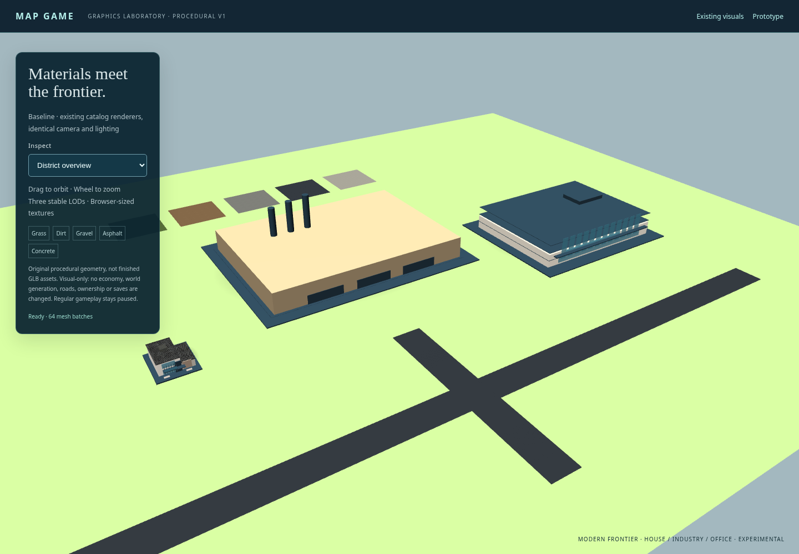
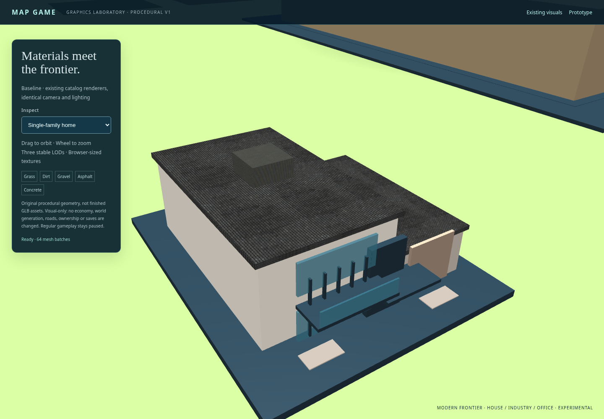
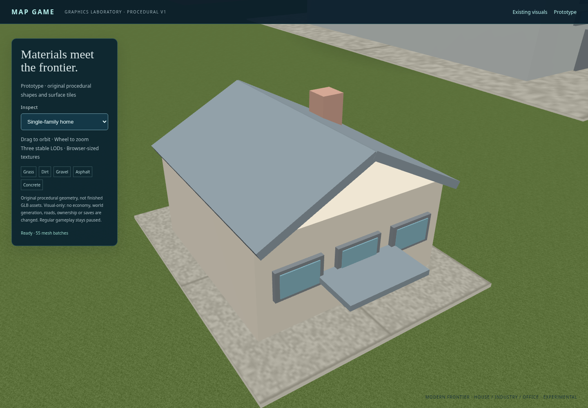
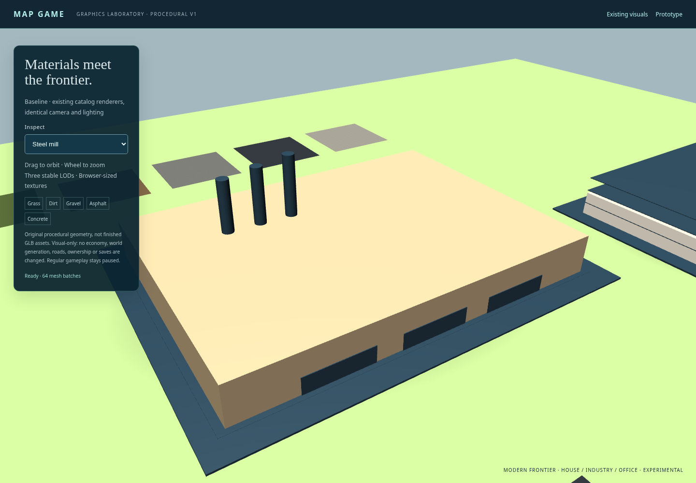
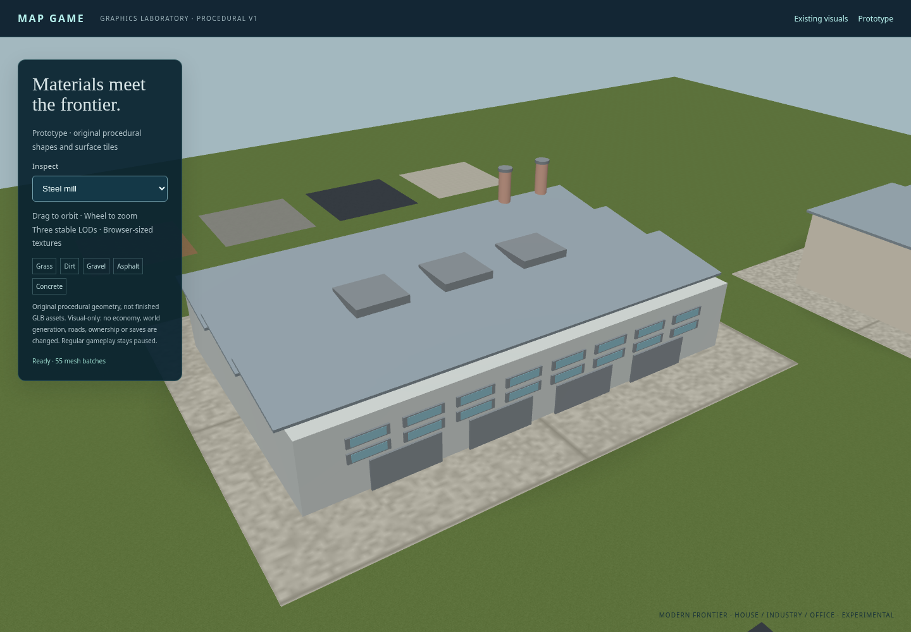
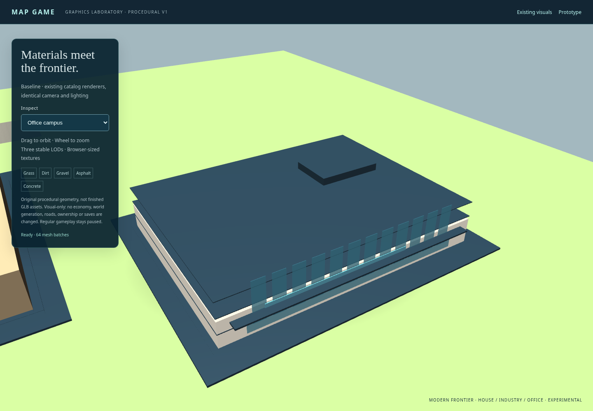
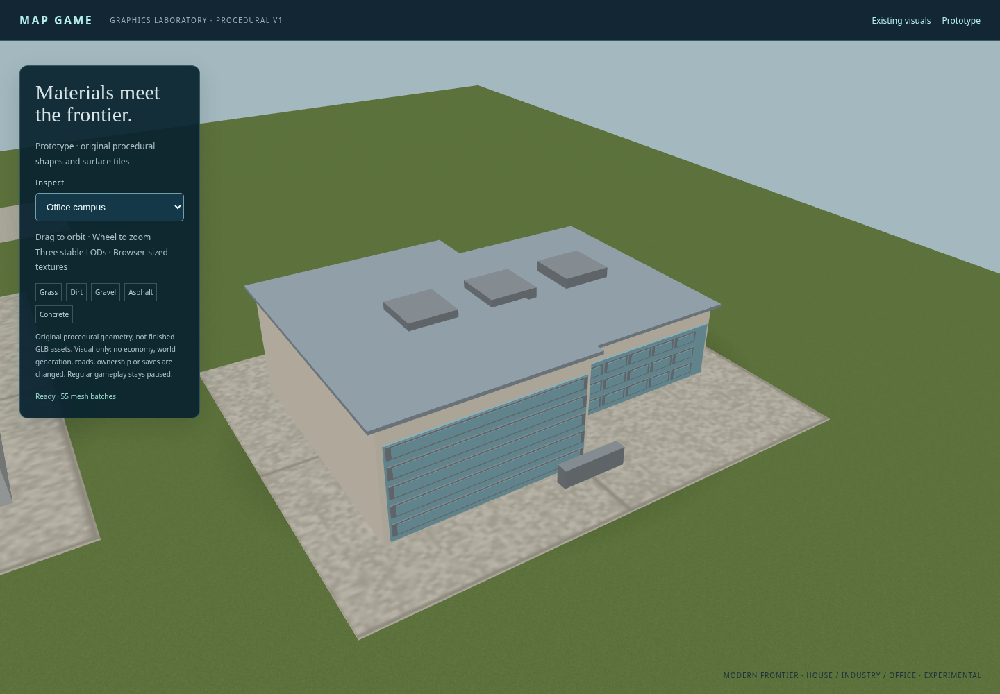
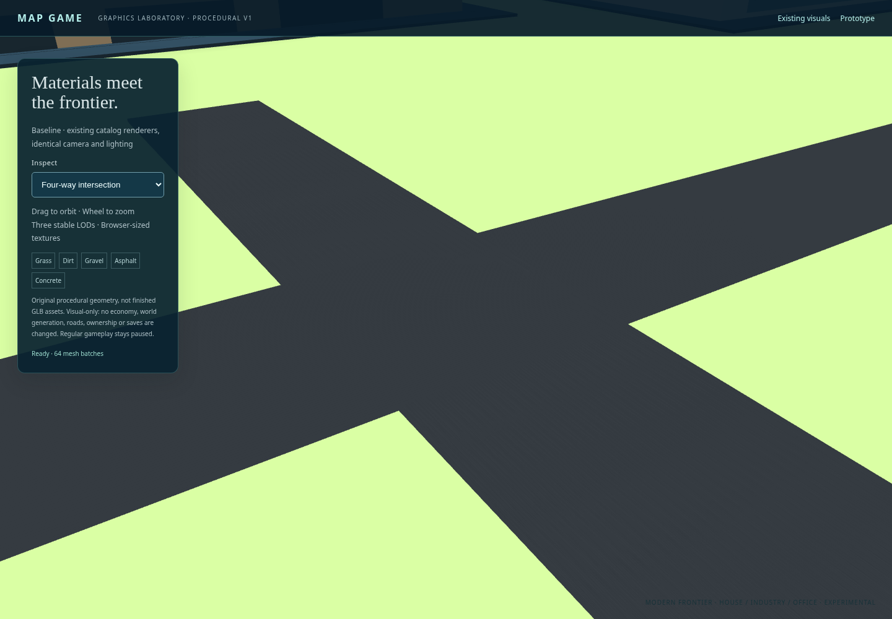
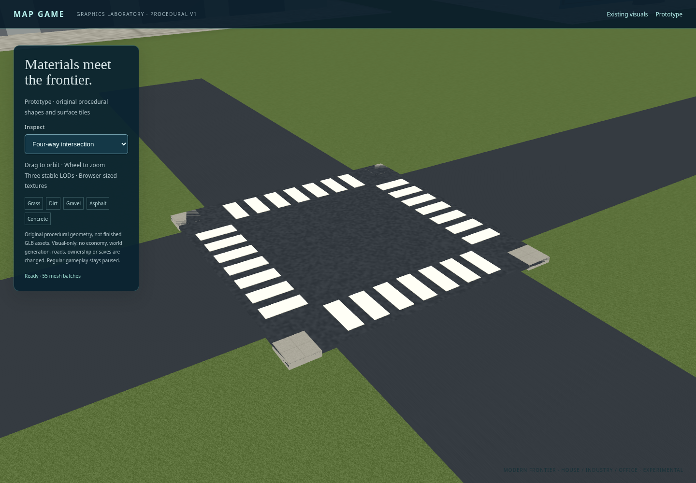
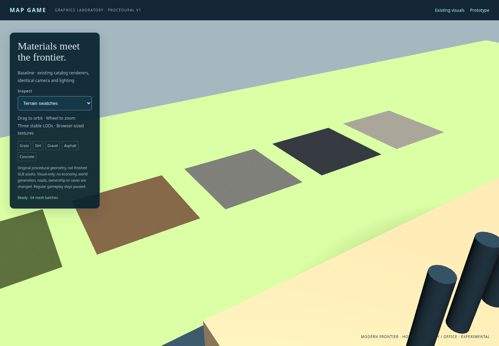

Original catalog renderer on the left, procedural prototype on the right. Same camera, viewport and lighting. These are low-detail procedural assets, not finished GLBs. Test-only verified Babylon 9.32.0 cache; software WebGL. No personal saves or multiplayer sessions.
Interactive showroom · Measurements and limitations









